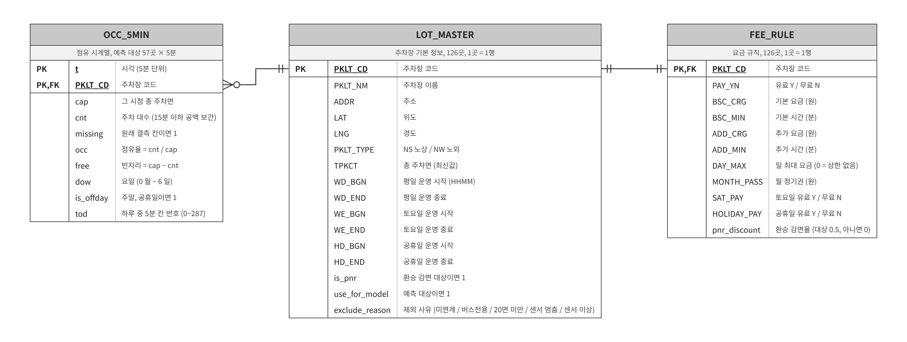
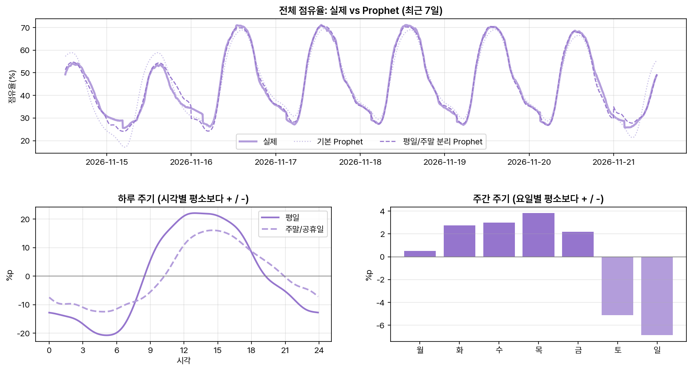
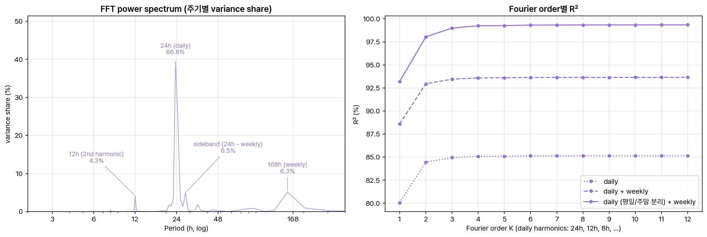
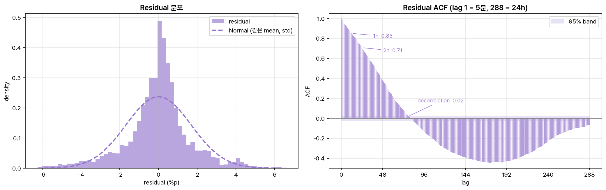
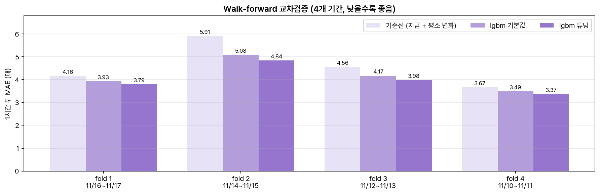
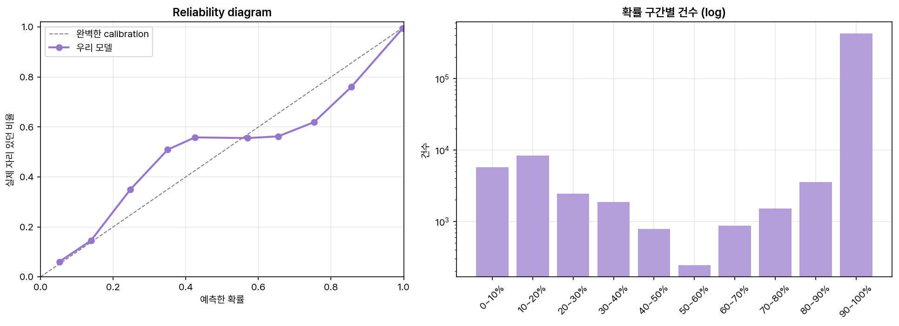
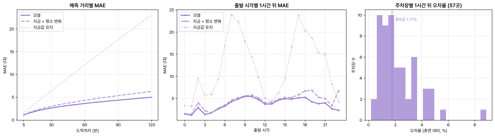

0요약
지금 빈자리를 보고 출발하면 1시간 뒤 도착할 때 평균 12대가 달라져 있다. 우리는 서울시 공영주차장 57곳의 빈자리를 도착 시점 기준으로 예측해 이 차이를 3.6대로 줄였다.
3.63대1시간 뒤 빈자리 평균 오차 (MAE)
2.26%1시간 뒤 오차율 (총면 대비)
-70%지금 빈자리를 그대로 쓸 때 대비 오차 감소
2~5초출발지, 목적지 입력부터 추천 5곳까지
- 데이터: 서울 열린데이터광장 실시간 API를 25.6일 동안 5분마다 직접 수집 (7,312회, 성공률 99.3%, 89만 행).
- 분석: 점유율 변동의 98.7%는 "평소 패턴(하루 주기, 요일 주기)"이고, 남은 "오늘이 평소와 다른 정도"는 half-life 3시간 20분으로 이어진다. 이 구조를 그대로 모델에 옮겼다.
- 모델: ML 5종, DL 2종, 기준선 2개를 같은 조건으로 비교해 LightGBM을 선택하고, Optuna로 튜닝했다. 4개 기간 교차검증에서 모두 개선됐다.
- 서비스: TMAP으로 도착 시각을 계산하고, 그 시점의 예상 빈자리와 자리 있을 확률로 목적지 주변 주차장 5곳을 추천한다. 음성으로도 검색할 수 있다.
1문제 정의
서울시가 제공하는 정보는 "지금 빈자리"다. 하지만 운전자가 필요한 것은 "도착했을 때 빈자리"이고, 둘의 차이는 출근 시간에 가장 크다.
예측 대상 57곳 전체에서, 지금 빈자리와 도착 시점 빈자리가 얼마나 다른지 실제 데이터로 계산했다.
| 도착까지 | 평균 변화 | 10대 이상 바뀐 비율 |
|---|
| 30분 | 6.4대 | 15.2% |
| 1시간 | 12.0대 | 23.6% |
| 2시간 | 22.6대 | 33.6% |
 위: 1시간 변화가 가장 큰 3곳(반포천 70.0대, 종묘 63.9대, 동대문 61.0대)과 가장 작은 3곳(대림역2 0.2대, 옥수역 0.3대, 신월4동 0.9대)의 하루. 아래: 출발 시각별 1시간 뒤 평균 변화 (57곳 평균).
위: 1시간 변화가 가장 큰 3곳(반포천 70.0대, 종묘 63.9대, 동대문 61.0대)과 가장 작은 3곳(대림역2 0.2대, 옥수역 0.3대, 신월4동 0.9대)의 하루. 아래: 출발 시각별 1시간 뒤 평균 변화 (57곳 평균).
- 7시 출발이 평균 24.0대로 가장 크고, 17~19시도 20대 안팎이다. 출퇴근 시간에 "지금 빈자리"가 가장 믿기 어렵다.
- 주차장마다 변동 크기가 크게 다르다. 대형 주차장은 하루에 수백 대가 오가고, 일부 소형 주차장은 거의 움직이지 않는다 (4.4장).
- 목표: 도착 시각(5분 ~ 2시간 뒤)의 빈자리와 자리 있을 확률을 예측해, 이 오차를 줄인다.
2데이터 수집
서울시 API는 현재 값만 주고 과거 기록을 주지 않는다. 그래서 GitHub Actions로 5분마다 직접 쌓았다.
2.1 데이터 출처
| 데이터 | 출처 | 주기 | 사용 |
|---|
| 공영주차장 실시간 주차 대수 | 서울 열린데이터광장 GetParkingInfo | 5분 | 모델 입력 |
| 주차장 기본 정보 (요금, 운영 시간) | 서울 열린데이터광장 | 하루 1회 | 요금 계산, 전처리 |
| 주차장 좌표 | 공영주차장 안내 GetParkInfo | 1회 | 추천 (거리) |
| 서울 실시간 도시데이터 7종 (인구, 인구 예측, 날씨, 도로, 상권, 문화행사, 주변 주차장) | 서울 열린데이터광장 citydata | 10분 | 효과 검증 후 미사용 (4.5장) |
| 환승주차장 21곳, 50% 감면 | 서울시설공단 안내 | 수동 정리 | 환승주차장 추천, 요금 |
2.2 수집 현황
| 항목 | 값 |
|---|
| 수집 기간 | 10/26 22:40 ~ 11/21 12:15 (25.6일) |
| 주차 수집 횟수 | 7,312회 (예정 7,364회), 성공률 99.3% |
| 가장 긴 수집 공백 | 160분 (10/30, 1회) |
| 주차장 수 | 126곳 |
| 원본 행 수 | 892,544행 |
 날짜별 수집 횟수. 정상은 하루 288회(5분 × 24시간). 첫날과 마지막 날은 하루가 다 차지 않았다.
날짜별 수집 횟수. 정상은 하루 288회(5분 × 24시간). 첫날과 마지막 날은 하루가 다 차지 않았다.
3데이터 전처리
믿을 수 있는 데이터만 남긴다: 126곳 중 57곳을 예측 대상으로 정하고, 15분 이하 짧은 공백만 채운다.
3.1 예측 대상 선정
| 구분 | 주차장 수 | 기준 |
|---|
| 미연계 | 17 | 실시간 연계가 안 된 주차장 (빈자리 정보 없음) |
| 버스전용 | 11 | 버스 전용 주차장 (일반 승용차 이용 불가) |
| 20면 미만 | 27 | 1대 변화가 너무 커서 예측 의미가 작음 |
| 센서 멈춤 | 12 | 하루 점유율 변동폭 중앙값 3%p 미만 |
| 센서 이상 | 2 | 수집 기간 전체에서 값 종류 4개 미만 |
| 예측 대상 | 57 | 위 기준을 모두 통과 |

3.2 공백 처리
- 5분 격자(시각 × 주차장) 419,748칸 중 원본 빈 칸은 2,964칸(0.71%)이다.
- 15분 이하 공백 855칸만 앞뒤 값으로 보간했다. 나머지 2,109칸(0.50%)은 값을 지어내지 않고 비워 두었다.
3.3 테이블 설계

OCC_5MIN (점유 시계열), LOT_MASTER (주차장 기본 정보), FEE_RULE (요금 규칙). 주차장 코드(PKLT_CD)로 연결된다.
3.4 데이터 한계
- 집계 초기화: 5분 만에 총면의 30% 넘게 바뀐 경우가 10곳에서 53회 있었다. 반포천은 21회로 거의 매일 새벽 한 번 집계를 초기화하는 것으로 보인다. 전체 칸의 0.01% 수준이다.
- 소형 주차장: 31면 주차장은 1대가 3.2%p라 "센서 멈춤" 기준을 통과한다. 하루에 1~2대만 오르내리는 곳(대림역2, 옥수역)이 남아 있다.
4탐색적 분석 (EDA)
핵심 발견 두 가지: ① 점유율 변동의 98.7%는 평소 패턴(하루 주기, 요일 주기)이다. ② 남은 "오늘이 평소와 다른 정도"는 몇 시간 이어진다. 날씨, 인구 같은 외부 데이터는 도움이 되지 않는다.
4.1 시간대, 요일 패턴
| 평일 | 주말, 공휴일 |
|---|
| 가장 붐빌 때 점유율 | 69.1% (12:55) | 58.9% (14:10) |
| 가장 한산할 때 점유율 | 37.0% (5:15) | 38.2% (4:40) |

- 평일은 6시부터 빠르게 차서 13시 무렵 정점이다. 주말은 정점이 10%p 낮고 1시간 15분 늦다.
- 밤에도 37~38%가 차 있다. 밤새 세워 두는 차(정기권, 거주자)가 많다.
- 월~금은 거의 같은 모양이고, 토요일은 중간, 일요일이 가장 한산하다.
4.2 시계열 분해 (Prophet, Fourier)
57곳 전체 점유율(전체 주차 대수 / 전체 총면)을 추세, 하루 주기, 요일 주기, 휴일, residual로 분해했다.
전체 점유율 = 추세 + 하루 주기 (평일 / 주말 따로) + 주간 주기 + 휴일 + residual
| Prophet 설정 | R² (설명력) | residual MAE | residual std |
|---|
| 기본 (하루 주기 1개) | 93.72% | 2.83%p (448대) | 3.74%p |
| 평일 / 주말 하루 주기 분리 | 98.72% | 1.18%p (186대) | 1.69%p |

위: 실제와 두 Prophet 모델 (최근 7일). 아래 왼쪽: 평일과 주말의 하루 주기. 아래 오른쪽: 요일 주기.
- 평일과 주말은 하루 모양 자체가 다르다. 평일은 하루 43%p, 주말은 29%p 출렁인다. 하나의 하루 주기로 묶으면 residual이 2.4배가 된다.
- 요일 주기는 화~목이 가장 붐비고(+3~4%p), 일요일이 가장 한산하다(-7%p). 수집 기간에 공휴일이 없어 휴일 성분은 0이다.
Prophet은 계절성을 Fourier series(sin, cos의 합)로 표현한다. 그래서 FFT로 데이터에 실제로 어떤 주기가 있는지 따로 측정했다.
| 주기 | 정체 | variance share |
|---|
| 24h | 하루 주기 | 66.8% |
| 28h | sideband (24h - weekly) | 6.5% |
| 168h | 주간 주기 | 6.3% |
| 12h | 하루 주기의 2nd harmonic | 4.3% |
| 21h | sideband (24h + weekly) | 3.6% |
| 34h | sideband (24h - 2×weekly) | 2.1% |

왼쪽: FFT power spectrum (Parseval 정리로 주기별 variance share 계산). 오른쪽: daily harmonics 개수(Fourier order K)별 R².
- 28h, 21h 같은 봉우리는 실제 생활 주기가 아니라, 하루 주기의 진폭이 요일마다 바뀌어서 생기는 sideband다 (1/(1/24 ∓ 1/168) = 28.0h, 21.0h). FFT가 Prophet과 독립적으로 "평일과 주말은 하루 모양이 다르다"를 보여준다.
- 하루 주기는 Fourier order 4(24h, 12h, 8h, 6h)면 충분하다. 그 뒤로는 R²가 0.1%p도 오르지 않는다.
- 같은 order에서도 평일 / 주말 분리만으로 R²가 85.1%에서 99.2%로 오른다. 복잡도보다 구조가 중요하다.
4.3 Residual과 ACF
평소 패턴으로 설명하고 남은 residual은 "오늘이 평소와 다른 정도"다.
| residual 통계 | 값 |
|---|
| MAE | 1.17%p (약 185대) |
| std | 1.68%p |
| |residual| ≤ 1%p / ≤ 2%p | 61.1% / 80.6% |
| skewness / excess kurtosis | -0.18 / 1.80 |
| lag | 5m | 30m | 1h | 2h | 4h | 12h | 24h |
|---|
| ACF | 0.987 | 0.921 | 0.853 | 0.708 | 0.384 | -0.391 | -0.064 |

- 지속성: half-life 3시간 20분, 6시간 30분 뒤 95% band 안으로 들어간다. 지금 평소보다 붐비면 1~2시간 뒤에도 붐빈다. 그래서 "지금의 차이"로 1~2시간 뒤를 보정할 수 있다.
- Ljung-Box p ≈ 0: residual은 white noise가 아니다. 평소 패턴 너머에 예측 가능한 구조가 남아 있다. 이것이 ML 모델이 필요한 통계적 근거다.
- 두꺼운 꼬리(excess kurtosis 1.80): 대부분 작게 틀리고 가끔 크게 틀린다. 큰 오차에 끌려가지 않는 l1 loss가 적합하다 (7.1장에서 Optuna가 l1을 선택).
- 24h ACF는 -0.06으로 어제의 이상이 오늘로 넘어오지 않는다.
4.4 주차장 유형 (KMeans)
주차장마다 평일 하루 모양(시간대별 평균 점유율 24개 값)으로 KMeans clustering을 했다. k는 silhouette score로 정했다.
| k | 2 | 3 | 4 | 5 | 6 |
|---|
| silhouette | 0.318 | 0.367 | 0.379 | 0.345 | 0.326 |
| 유형 | 주차장 수 | 정점 | 정점 / 최저 점유율 | 대표 |
|---|
| A. 업무형 혼잡 (낮 정점, 밤 여유) | 20 | 13시 | 87.5% / 25.4% | 구파발역, 신설동, 영등포구청역 |
| B. 업무형 여유 (낮에도 50% 미만) | 13 | 14시 | 44.9% / 15.6% | 구로디지털단지역, 당산노외 |
| C. 상시 혼잡 (밤에도 60% 이상) | 11 | 12시 | 87.0% / 67.5% | 장안2동, 동작대교, 학여울역 |
| D. 주거형 (저녁, 밤 정점) | 13 | 21시 | 55.5% / 45.5% | 봉천복개3, 신대방역, 동구로 |

- 같은 오후 1시라도 A는 88%, B는 44%다. 시각만으로는 부족해서, 주차장마다 평소 패턴을 따로 계산해 모델 변수로 넣었다.
- silhouette 0.379는 중간 정도의 분리다. 유형을 변수로 쓰기보다, 주차장별 평소 패턴을 그대로 쓰는 것이 더 정확하다.
4.5 외부 데이터 효과 검증
도시데이터 6종을 하나씩 더하는 add-one, 전부 넣고 하나씩 빼는 leave-one-out ablation으로 1시간 뒤 MAE를 비교했다. 도시데이터는 수집된 시각 이후에만 쓰게 해서 미래 정보가 섞이지 않게 했다.
| 입력 | 1시간 뒤 MAE | 주차장 데이터만 대비 |
|---|
| 주차장 데이터만 | 3.876대 | 기준 |
| + 도시데이터 6종 전부 | 4.060대 | +4.7% |
| + 날씨 | 4.080대 | +5.3% |
| + 상권 / 인구 예측 / 도로 / 인구 | 3.880 ~ 3.896대 | +0.1 ~ +0.5% |
| + 문화행사 | 3.873대 | -0.1% |
| 전부 - 날씨 | 3.886대 | +0.3% |

- 도시데이터를 전부 넣으면 오히려 4.7% 나빠지고, 원인은 거의 날씨다. 수집 기간에 비 온 날이 적어 우연한 패턴을 외우는 overfitting이다.
- 결론: 주차장 데이터만 쓴다. 평소 패턴과 지금 상태가 이미 대부분을 설명한다.
5모델 설계
모델 = 평소 패턴 + 오늘의 차이 보정. 입력 변수 16개는 모두 4장의 분석 결과에서 나왔다.
5.1 예측 문제
| 항목 | 정의 | 근거 |
|---|
| 예측 대상 | 도착 시각의 점유율 변화량 (도착 시 - 지금) | 4.3: 지금 상태가 이어지므로 변화량만 배우면 쉽다 |
| 예측 거리 | 5분 ~ 2시간 (5분 단위) | TMAP 이동 시간 대부분이 2시간 안, 2h ACF 0.71 |
| 출력 1 | 예상 빈자리 = 총면 × (1 - 예측 점유율) | 사용자가 바로 이해하는 단위 |
| 출력 2 | 자리 있을 확률 = P(빈자리 ≥ 3대) | validation residual 분포로 계산 (7.4장) |
| 출력 3 | 예측 신뢰도 (높음 / 보통 / 낮음) | 주차장별 validation 1시간 뒤 오차율 2% / 4% 기준 |
5.2 입력 변수 16개
| 변수 | 의미 | 근거 |
|---|
| p_delta, p_fut, p_now | 주차장별 평소 변화량, 평소 점유율 (도착, 지금) | 4.2, 4.4: 평소 패턴이 변동의 98.7%, 주차장마다 모양이 다름 |
| tod, ttod | 지금 시각, 도착 시각 | 4.2: 24h 주기가 variance의 66.8% |
| dow, off, toff | 요일, 지금 / 도착 휴일 여부 | 4.2: weekly 주기, 평일 / 주말 분리로 R² 85% → 99% |
| occ, gap | 지금 점유율, 오늘 - 평소 차이 | 4.3: residual half-life 3시간 20분 |
| d1, d3, d6, d12 | 최근 5, 15, 30, 60분 변화 | 단기 추세 (들어오는 중인지, 빠지는 중인지) |
| h | 예측 거리 | 1장: 멀수록 변화가 큼 |
| cap | 총면 | 4.4: 규모와 유형에 따라 패턴이 다름 |
5.3 평가 설계
| 구간 | 기간 | 일수 | 용도 |
|---|
| train | 10/26 ~ 11/13 | 18.0 | 모델 학습 |
| validation | 11/14 ~ 11/17 | 3.9 | early stopping, 튜닝, 확률 분포 |
| test | 11/18 ~ 11/21 | 3.4 | 최종 성능 평가 (한 번만) |
 미래 데이터로 과거를 맞히지 않도록 시간 순으로 나누고, 구간 사이에 2시간 gap을 두었다.
미래 데이터로 과거를 맞히지 않도록 시간 순으로 나누고, 구간 사이에 2시간 gap을 두었다.
지표는 MAE(대, 모델 선택 기준), RMSE(큰 오차), MSLE(작은 주차장의 상대 오차), Brier(확률 정확도) 네 가지를 보고, 기준선 두 개와 비교했다.
- 지금값 유지: 지금 빈자리가 그대로 간다고 본다 (서울시 앱 방식).
- 지금 + 평소 변화: 지금 값에 평소 그 시간대의 변화량을 더한다. 모델이 넘어야 할 진짜 기준이다.
6모델 비교와 선정
9개를 같은 기간, 같은 지표로 비교했다. 정확도가 같으면 빠르고 가벼운 쪽을 고른다: LightGBM.
| 모델 | 종류 | MAE 30분 | MAE 1시간 | MAE 2시간 | 1위 대비 | 예측 응답 | 학습 |
|---|
| gbm | ML (boosting) | 3.19 | 4.54 | 6.45 | 0.0% | 131ms | 161초 |
| lgbm | ML (boosting) | 3.19 | 4.56 | 6.55 | +0.5% | 97ms | 30초 |
| xgb | ML (boosting) | 3.19 | 4.57 | 6.53 | +0.8% | 108ms | 31초 |
| rf | ML (tree) | 3.19 | 4.66 | 6.91 | +2.7% | 78ms | 78초 |
| mlp | DL | 3.52 | 4.79 | 6.65 | +5.5% | 133ms | 142초 |
| gru | DL (시계열) | 3.54 | 5.08 | 7.16 | +12.0% | 135ms | 443초 |
| 지금 + 평소 변화 | 기준선 | 3.39 | 5.16 | 7.80 | +13.8% | | |
| ridge | ML (선형) | 3.82 | 5.33 | 7.73 | +17.5% | 119ms | 3초 |
| 지금값 유지 | 기준선 | 6.16 | 11.53 | 21.82 | +154.1% | | |
MAE 단위는 대. 평가 기간 11/14 ~ 11/17 (11/17 실행, 튜닝 전 기본 설정). 예측 응답 = 57곳을 한 번에 예측하는 시간.

- boosting 3종(gbm, lgbm, xgb)이 상위권이고 차이는 1% 안이다.
- lgbm은 1위와 0.5% 차이지만 학습이 5.5배 빠르고(161초 → 30초), 응답이 25% 빠르고, 모델이 40% 작다. 매일 재학습하는 서비스에 가장 효율적이다.
- DL은 27일 규모 데이터에서 tree 모델보다 나빴다(GRU +12%). ridge는 기준선보다도 나빠서, 주차 수요가 비선형이라는 근거가 된다.
7모델 고도화
튜닝으로 5% 개선했고, 4개 기간 모두에서 확인했다. 모델은 4장에서 세운 가설("평소 패턴 + 오늘의 차이")대로 판단한다.
7.1 Hyperparameter 튜닝 (Optuna)
Optuna TPE로 52회 탐색했다. 목표는 validation 1시간 뒤 MAE이고, test는 튜닝이 끝난 뒤 한 번만 평가했다. loss function도 후보(l2, l1, huber)로 넣었다.
| 설정 | 기본값 | 튜닝 결과 | 의미 |
|---|
| objective | l2 | l1 | loss function |
| num_leaves | 63 | 254 | 트리 하나의 복잡도 |
| learning_rate | 0.05 | 0.0226 | 한 번에 배우는 양 |
| min_child_samples | 100 | 20 | leaf 하나의 최소 표본 |
| subsample | 0.8 | 0.685 | 트리마다 쓰는 행 비율 |
| colsample_bytree | 0.9 | 0.875 | 트리마다 쓰는 변수 비율 |
| reg_lambda | 1.0 | 3.61 | L2 regularization |
| 기본값 | 튜닝 | 개선 |
|---|
| validation 1시간 뒤 MAE | 3.818대 | 3.619대 | -5.2% |
| test 1시간 뒤 MAE | 4.557대 | 4.330대 | -5.0% |
l1 loss가 선택된 것은 4.3장의 두꺼운 꼬리(excess kurtosis 1.80)와 일치한다.
7.2 Walk-forward 교차검증
test 기간을 2일씩 과거로 옮기며 4번 평가했다. 각 회차는 그 시점까지의 데이터만 쓴다.
| 1시간 뒤 MAE (대) | 기준선 | lgbm 기본값 | lgbm 튜닝 |
|---|
| 11/16 ~ 11/17 | 4.164 | 3.928 | 3.792 |
| 11/14 ~ 11/15 | 5.911 | 5.084 | 4.836 |
| 11/12 ~ 11/13 | 4.561 | 4.171 | 3.983 |
| 11/10 ~ 11/11 | 3.665 | 3.489 | 3.367 |
| mean ± std | 4.575 ± 0.963 | 4.168 ± 0.673 | 3.995 ± 0.617 |

튜닝은 4개 기간 모두에서 기본값보다 좋았고(평균 -4.1%), 표준편차도 줄었다. 운 좋은 기간이 아니라 꾸준한 개선이다.
7.3 예측 근거 (SHAP)
튜닝된 모델을 최신 분할로 학습(76초, 트리 1,005개)하고, test 1시간 뒤 예측 3,000건의 TreeSHAP을 빈자리 대수로 계산했다.
| 그룹 | 비중 | 주요 변수 (mean |SHAP|) |
|---|
| 평소 패턴 | 78.2% | 평소 변화 10.38대, 평소(도착) 1.90대, 평소(지금) 0.64대, 지금 시각 0.61대 |
| 오늘의 상태 | 18.3% | 지금 점유율 1.57대, 오늘 - 평소 차이 1.03대, 최근 변화 4개 합 0.73대 |
| 기타 | 3.5% | 총면 0.53대, 예측 거리 0.10대 |

- 모델은 평소 패턴을 기본으로 깔고(78%) 오늘의 상태로 보정한다(18%). 4장에서 세운 가설을 모델이 확인해 준다.
- 오른쪽: 평소보다 더 차 있으면(+) 빈자리가 늘어난다고(+) 보정한다. mean reversion이다. 4.3장의 ACF가 1h에 0.85(1보다 작음)였던 것, 즉 차이가 조금씩 줄어든다는 것을 모델이 배웠다.
- 최근 5~60분 변화의 비중은 4%로 작아서, 센서 값이 한 번 튀어도 예측이 흔들리지 않는다.
7.4 확률 신뢰도
validation residual 분포로 "빈자리 3대 이상일 확률"을 만들고, test에서 "p%라고 한 경우 실제로 p% 자리가 있었나"를 확인했다.
| 예측 확률 구간 | 예측 평균 | 실제 비율 | 건수 |
|---|
| 0 ~ 20% | 5.2%, 13.9% | 6.1%, 14.6% | 14,132 |
| 20 ~ 50% | 24.8 ~ 42.5% | 35.0 ~ 55.8% | 5,098 |
| 50 ~ 90% | 57.0 ~ 85.5% | 55.6 ~ 76.0% | 6,197 |
| 90 ~ 100% | 99.7% | 99.5% | 425,101 |

- Brier score 0.0136으로, 평균 확률만 쓸 때(0.0416)보다 67% 좋다. 전체의 94%를 차지하는 90% 이상 구간은 거의 정확하다.
- 중간 구간은 어긋난다. 20~50%는 실제보다 10~16%p 낮게, 70~90%는 9~13%p 높게 말한다 (해당 구간은 전체의 약 2%). isotonic regression 보정을 다음 단계로 둔다.
- "100%"는 99.x%의 반올림이라 화면에는 "99% 이상"으로 표시한다.
8최종 성능
1시간 뒤 빈자리 평균 오차 3.63대, 오차율 2.26%. 1장의 "12대 차이"가 3.6대로 줄었다.
| 도착까지 | MAE | 오차율 (총면 대비) | RMSE | 지금값 유지 대비 | 지금 + 평소 변화 대비 |
|---|
| 30분 | 2.63대 | 1.72% | 7.26대 | -59% | -12% |
| 1시간 | 3.63대 | 2.26% | 9.11대 | -70% | -16% |
| 2시간 | 5.01대 | 2.91% | 11.94대 | -78% | -20% |
튜닝된 LightGBM, test 11/18 00:00 ~ 11/21 10:15, 채점 1,351,584건 (주차장 × 기준 시각 × 예측 거리 5분 ~ 2시간).

왼쪽: 예측 거리별 MAE. 가운데: 출발 시각별 1시간 뒤 MAE. 오른쪽: 주차장별 1시간 뒤 오차율.
- 멀수록 이득이 크다: 2시간 뒤에는 지금값 유지보다 78%, 기준선보다 20% 좋다. 4.3장의 "오늘의 차이가 몇 시간 이어진다"를 활용한 결과다.
- 시간대: 지금값 유지는 7시, 17시에 24대까지 틀리지만, 모델은 하루 종일 6대 이하다. 기준선과의 차이는 날마다 달라지는 저녁(17~21시)에 가장 크다.
- 주차장별: 57곳 중 33곳이 오차율 2% 이하, 49곳(86%)이 4% 이하다. 중앙값 1.77%. 4%를 넘는 8곳은 소형 주차장과 집계 초기화 주차장이다.
9서비스 적용
예측을 행동으로: 출발지와 목적지(또는 음성)를 넣으면 TMAP으로 도착 시각을 계산하고, 그 시점 기준으로 주차장 5곳을 추천한다.
9.1 추천 흐름
| 단계 | 하는 일 | TMAP 호출 |
|---|
| ① 장소 검색 | 출발지, 목적지 텍스트 → 좌표 | POI 2건 |
| ② 자동차 경로 | 출발지 → 목적지 시간 → 주차장별 도착 시각 (미래 출발은 타임머신, 도착 목표가 있으면 출발 시각 역산) | 경로 1건 |
| ③ 후보 | 목적지 반경 1km (부족하면 2km) + 가는 길의 환승주차장 | |
| ④ 예측 | 도착 시각의 예상 빈자리, 자리 있을 확률, 신뢰도 | |
| ⑤ 정렬 | 확률 등급 → 총 소요시간 → 도보 거리 (요금은 표시만) | |
| ⑥ 마지막 이동 | 상위 5곳: 1.5km 이내는 도보 경로, 그 밖은 대중교통 | 경로 ≤ 5건, 대중교통 ≤ 1건 |
- 응답 시간: 실제 TMAP 호출 기준 2~5초 (목표 10초). 예측 자체는 57곳에 약 0.1초.
- TMAP 한도 관리: Free 요금제는 경로 하루 1,000건, 대중교통 10건이다. 같은 검색은 10분 동안 다시 부르지 않고, 한도를 넘으면 추정값으로 바꾼다.
- 음성 검색: 브라우저 Web Speech API(Google 음성 인식)로 말을 문장으로 바꾸고, 출발지, 목적지, 출발 또는 도착 목표 시각("8시 반까지 가야 돼")을 뽑아 추천한다.
9.2 시스템 구조
 데이터 수집 → 학습 → 모델 저장 → 서빙 → 서비스. 아래는 실제 추천 출력 예시 (수원SK스카이뷰 → 교대역).
데이터 수집 → 학습 → 모델 저장 → 서빙 → 서비스. 아래는 실제 추천 출력 예시 (수원SK스카이뷰 → 교대역).
9.3 자동 재학습
- GitHub Actions에서 최신 데이터로 다시 학습한다.
- 운영 모델을 새 모델과 같은 평가 기간에서 다시 채점해, 새 모델이 더 좋을 때만 교체한다. 기간마다 난이도가 달라 저장된 점수끼리 비교하면 공정하지 않기 때문이다.
10한계와 향후 계획
| 한계 | 영향 | 계획 |
|---|
| 데이터 25.6일, 공휴일 없음 | 명절, 공휴일 패턴 미학습 | 수집을 계속하고 공휴일 이후 재학습 |
| 예측 대상 57곳 | 강남처럼 목적지 근처에 대상이 없는 지역 | 실시간 연계 주차장 확대 시 자동 반영 |
| 예측 범위 2시간 | 2시간 넘는 도착은 평소 패턴으로 계산 | 4h ACF 0.38 → 4시간까지 확장 검토 |
| 확률 중간 구간 어긋남 | 20~50%는 비관적, 70~90%는 낙관적 | isotonic regression 보정 |
| 집계 초기화, 소형 주차장 센서 | 일부 주차장 오차율 4% 이상 | 급변 구간 제외 규칙, 변동폭 기준을 대수로 보완 |
| 날씨 데이터 overfitting | 지금은 미사용 | 몇 달 데이터가 쌓이면 다시 검증 |
부록
용어
| 용어 | 뜻 |
|---|
| MAE | 평균 절대 오차. 빈자리를 평균 몇 대 틀렸는지 |
| 오차율 | MAE를 총면 대비 %로 나타낸 값 (점유율 오차 %p) |
| RMSE | 제곱 평균 오차의 제곱근. 큰 오차를 더 무겁게 본다 |
| Brier score | 확률 예측의 오차. 0에 가까울수록 좋다 |
| R² | 전체 변동 중 모델이 설명하는 비율 |
| ACF | 자기상관. 지금 값이 N칸 뒤 값과 얼마나 닮았는지 |
| Fourier order, harmonic, sideband | 주기를 sin, cos로 표현할 때 쓰는 개수 / 기본 주기의 배수 주기 / 진폭 변조로 생기는 옆 봉우리 |
| silhouette score | clustering이 얼마나 잘 나뉘었는지 (1에 가까울수록 좋음) |
| SHAP | 예측에 각 변수가 얼마나 기여했는지 나눠 보여주는 값 |
| walk-forward | 평가 기간을 시간 순으로 옮기며 여러 번 평가하는 교차검증 |
재현